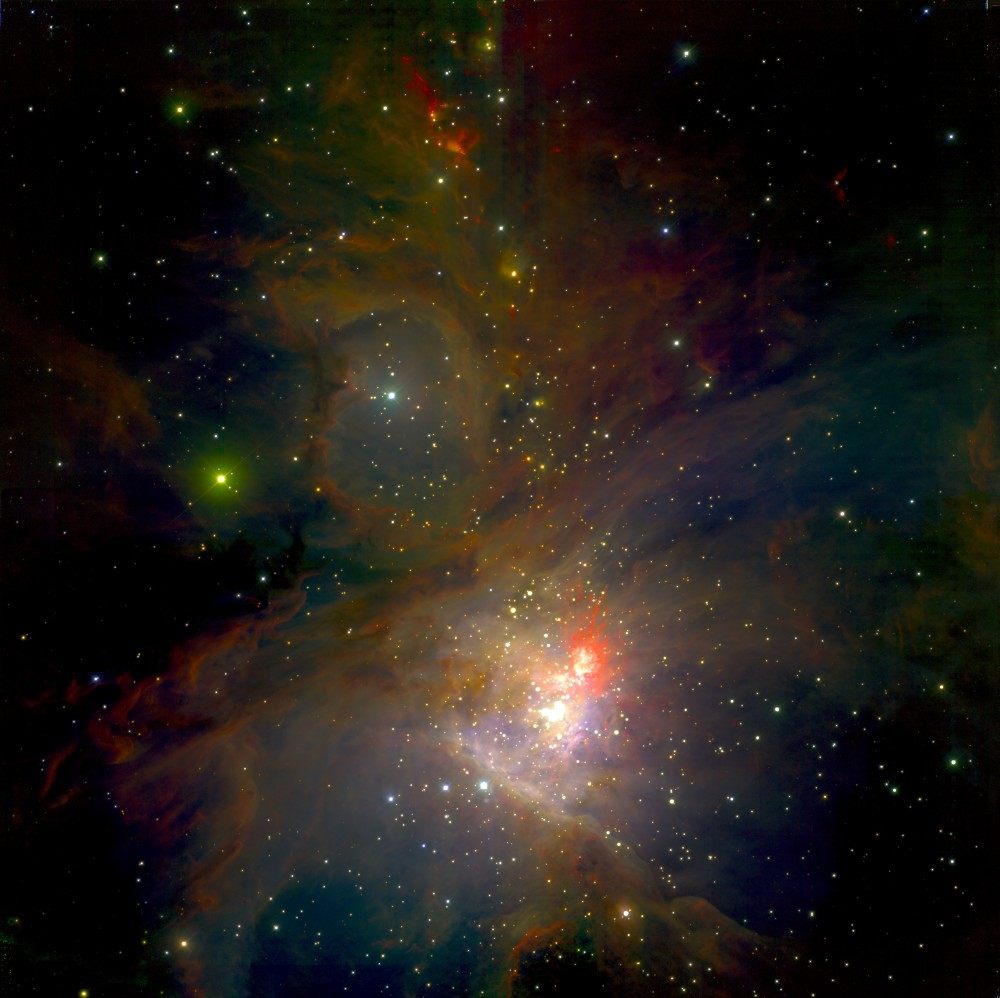
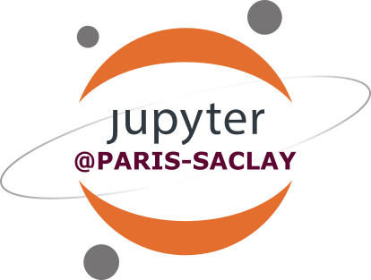

Areas of expertise
- Interoperability of Information Systems
- Open Science, Open Data, Open Source Software
- Geospatial and Astronomical data mining and exploitation
- Celestial and planetary reference systems
- Geographical Information Systems

Professional Experience
- 2023 - present: Educational Software Developer (Paris-Saclay-LISN)
- 2019 - 2021: Community and Operation Manager @ scikit-learn Fondation Inria (Inria)
- 2007 - 2019: Planetary and Space Data mining (Paris-Saclay-GEOPS)
- 2005 - 2007: WirCam and MegaCam (CFHTLS) data processing and curation (TERAPIX-IAP)
Projects
Jupyter for Education @ Paris Saclay
- Typescript development
- Worshop "Demistify myst Markdown in education"

Software and Source Codes College
- Working group Reconnaissance et Carrières (co-chair)
- Working group Outils et bonnes pratiques techniques et sociales
@ scikit-learn Fondation Inria
- Management and event organization
- Python development
- Issue and pull request (PR) triaging
VESPA-Europlanet
Volunteer Activities
- Co-organiser of pyData Paris
- Astropy contributor
- Debian packaging contributor
© 2025 Chiara Marmo. Design: HTML5 UP.
Images: Chiara Marmo, scikit-learn.org, NASA/JPL/UArizona